Your Coding Environment#
The first and most important step in the analytics journey is setting up the right environments to execute your projects and ideas. I use Python for most of my projects because it is fairly easy to learn and is one of the most common tools used for projects in several fields such as Data Science, Cybersecurity, Data Engineering and even App Development.
Python can be downloaded directly or you can have it downloaded through the Anaconda Distribution, which includes Python, R and other Data Science tools.
Introduction to Jupyter Lab#
One you have launched Jupyter, click on the folder icon. Under Name, you should see some familiar folders and files you currently have saved on your computer. Anything you create in Jupyter will automatically be saved locally in whatever directory you are currently in (which Jupyter will show you). It is very important to have awareness of the folders you will use as directories. I personally like to create new folders for each project I build.
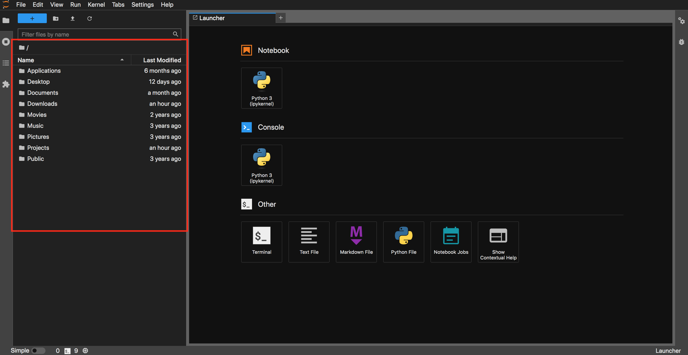
1.1. Creating New Folders in Jupyter#
You can add a new folder by clicking on the folder icon or by right clicking anywhere in the current directory and selecting New Folder.
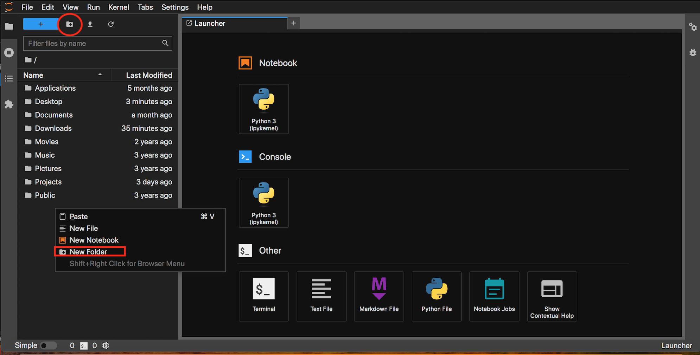
Be sure to give your folder a distinct name to set it apart from other directories on your computer.
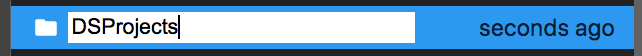
Now a whole new directory is available for you to use for your projects! To make this folder your working directory, double click it.
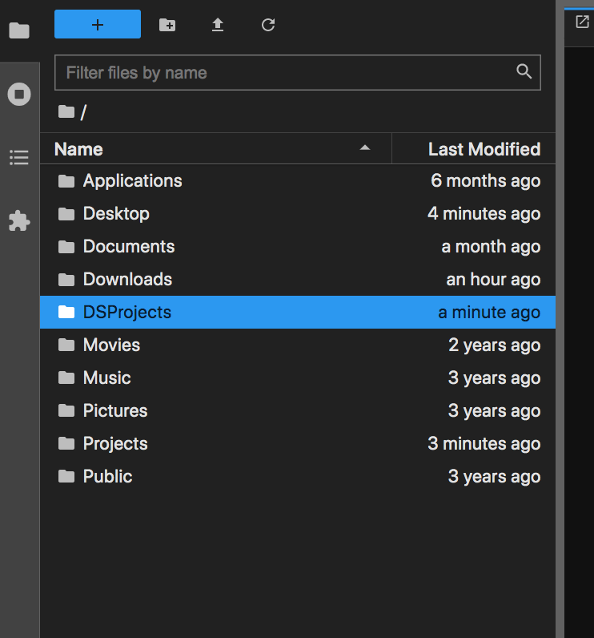
1.2. Launching Your First Notebook#
Once you are in the folder, click on Python 3(ipykernal) under Notebook. This will open up a new notebook that you can use to code. You can also access other interfaces through the Launcher tab such as the Command Line (Terminal).
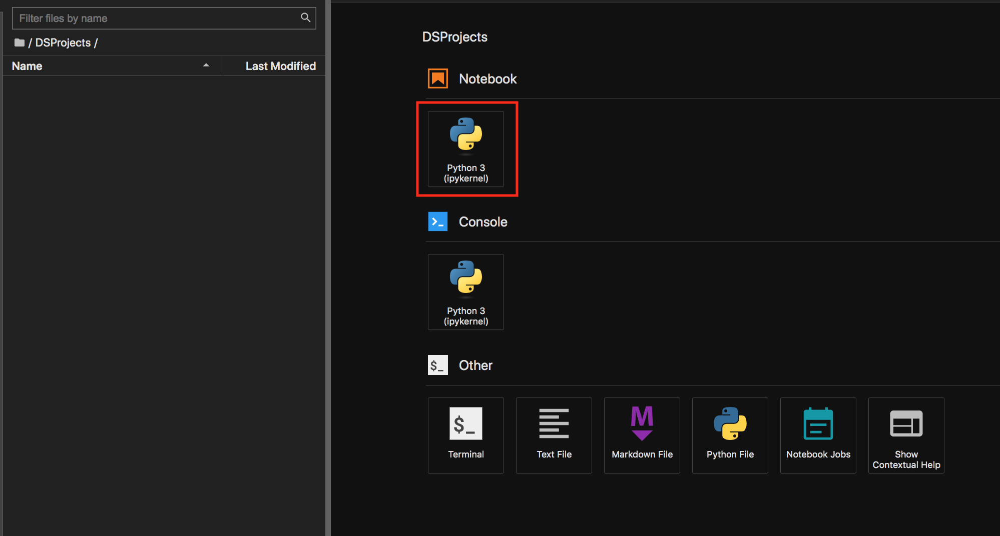
Now that you have opened your first notebook, lets go through some of the more relavant tabs and discuss their functions.
1.3. Important Jupyter Notebook Functions#
File Tab#
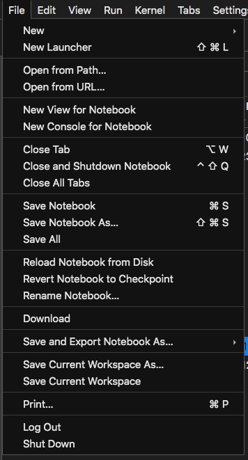
New: The name is self-explanatory as it allows you to create multiple new Notebooks for your Python or Data Science projects.
Open: This command will redirect you to your local host and you can open other files from there.
Save Notebook as: Used to save your Notebook with a specific path.
Rename Notebook: You can use this command to Rename your Notebook or simply double click on the title header instead for performing the same action.
Revert Notebook to Checkpoint: If you ever mess up with while experimenting with the Jupyter Notebook, this is an useful command to revert back to your previous saved state and nullify your mistakes.
Print: Used to get only the code part of the Jupyter Notebook for a clean print.
Download: Allows you to download your Jupyter Notebook in various formats including HTML, IPython, .py format, etc., among many other options.
Kernal Tab#
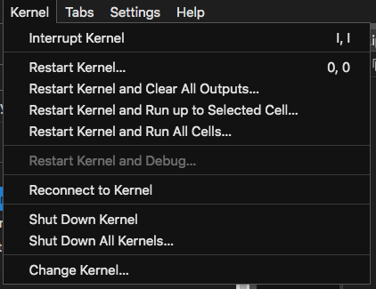
The Jupyter notebook kernal is a tool that helps us execute python code in Jupyter notebook, hence why it is called the ipython kernal when we launch a notebook. These are the main functions in the Kernal tab:
Interrupt: Used to stop the execution or running of a particular cell. This command is useful when you have reached a desired result within a specific number of epochs or in case you made an error, and you realize this while running the code.
Restart: Useful to restart the Kernel of the Notebook.
Restart and Clear Output: Used to restart the Kernel of the Notebook and reset all the cells that were run previously.
Restart and Run all: Used to restart the Kernel of the Notebook, and reset all the cells that were run previously, and finally re-run through all the cells of the Notebook.
Reconnect: Used to reconnect to a dead kernel which might occur at times due to a lack of memory.
Shutdown: Used to shutdown the current working Kernel of the Notebook.
Change kernel: Allows you to switch Kernels.
Command Icon Palette:#
Lets talk about the icon palette in your notebook, starting from the first icon, which is the save icon, until the end. This pallete will be useful for quickly completing the majority of your tasks in the notebook
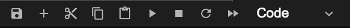
Save and Checkpoint: As the name suggests it saves your progress and checkpoints the file accordingly. The shortcut key ctrl + s will perform an equivalent action.
Insert Cell Below: Adds a new cell below.
Cut Selected Cells: Cuts the selected cells.
Copy Selected Cells: Copies the selected cells.
Paste Selected Cells: Pastes the selected cells.
Run: Runs the particular selected cell.
Interrupt: Used to stop the execution or running of a particular cell.
Restart: Useful to restart the Kernel of the Notebook.
Restart and Run all: Used to restart the Kernel of the Notebook, and reset all the cells that were run previously, and finally re-run through all the cells of the Notebook.
Change Cell Type: Allows you the option to convert the type of cell into your desired type ranging from Code, Markdown, etc.
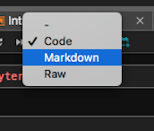
Cell Types#
Jupyter Notebook has 3 types of cell types:
Code: Where you can write and execute python code
Markdown: Where you write text w
Raw: You can use this type of cell to write in different formats such as HTML
The most commonly used cell types are Code and Markdown.
1.4. Running Cells in Jupyter#
You can run the notebook document step-by-step (one cell a time) by pressing crtl + enter for running the particular cell or shift + enter to run the current cell as well create a new cell below it. You can run the whole notebook in a single step by clicking on the menu Run -> Run All Cells.
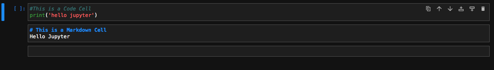
The above image is a representation of how each of these cells can run as separate blocks. In the first code cell you can notice that we have used the print statement for printing a basic “Hello World!” program, while we’ve turned the second one to a Markdown cell. After running all cell blocks, this is what you should get.
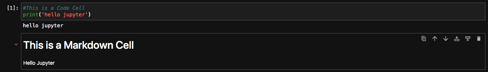
Any thing you write after a hashtag(#) will be considered text and won’t be executed as code.
On the other hand, anything your write after # in a markdown cell will be considered a header. Click here to find out more about markdowns.
A Short Aside on Keyboard Short Cuts#
Knowing keyboard shortcuts will make coding a lot easier for you. I tend to use well known short cuts like ctrl z to undo errors I’ve made, or ctrl c to copy and ctrl v to paste, but there are many more keyboard shortcuts that can aid you. You can use the image below to uncover more shortcuts or use this resource to find out more about shortcuts
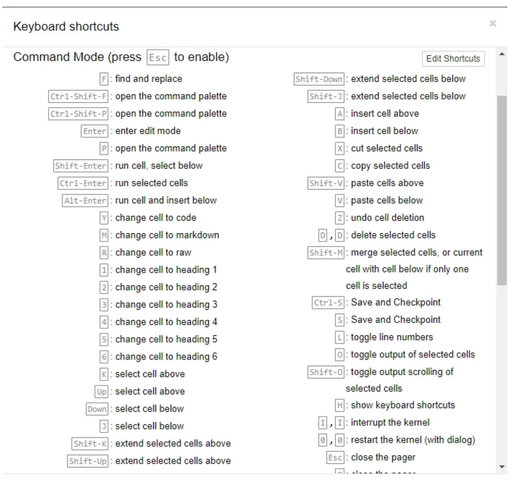